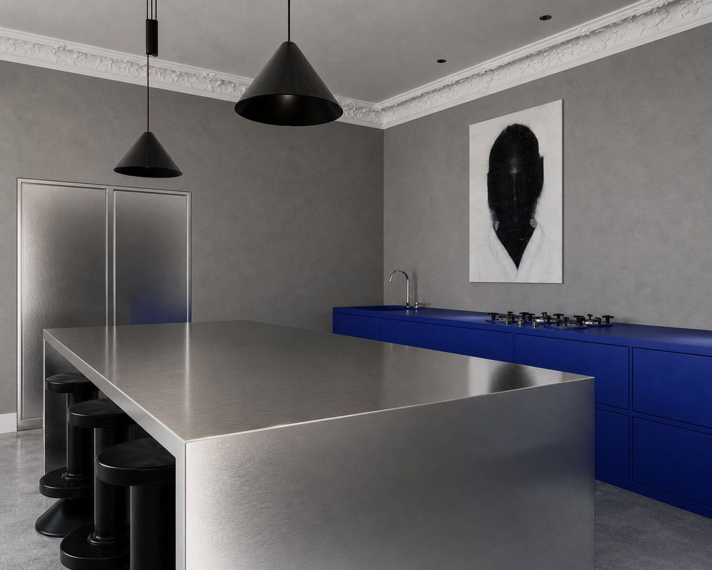
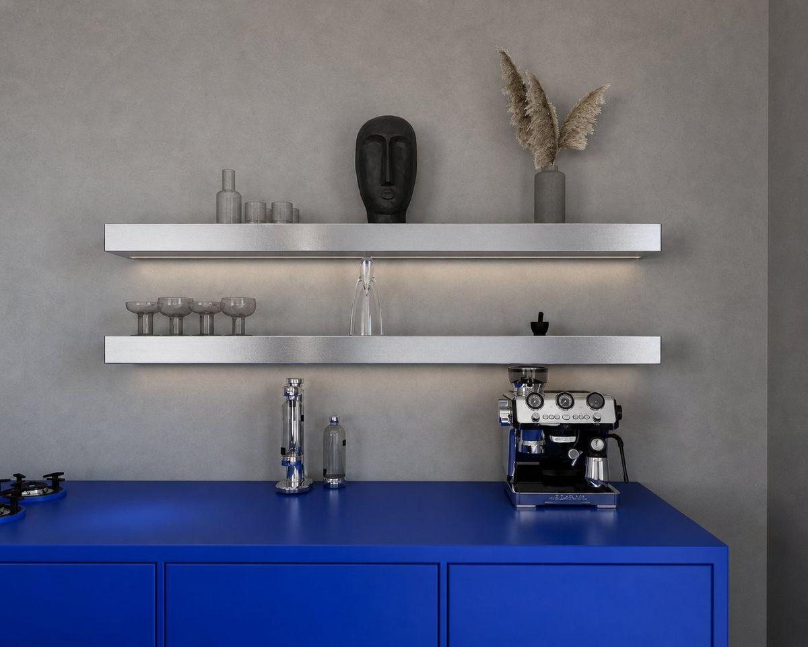
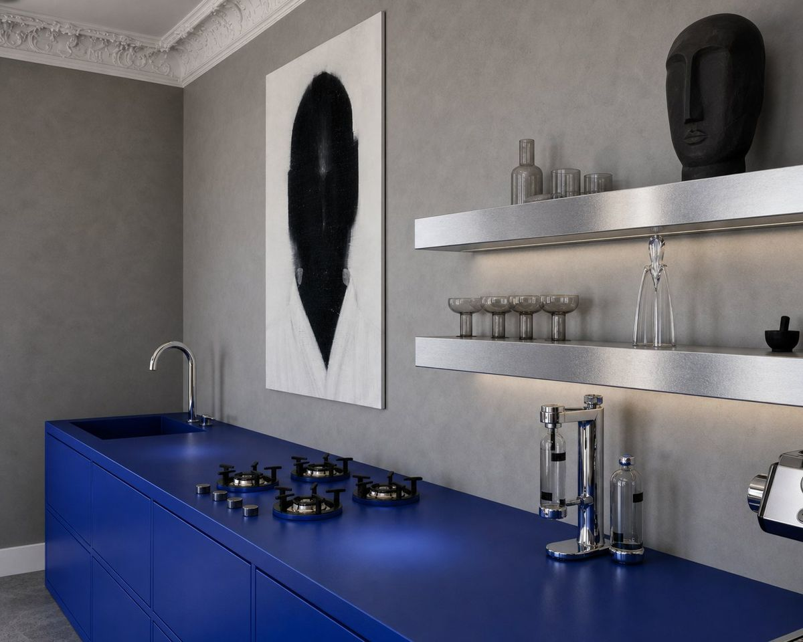
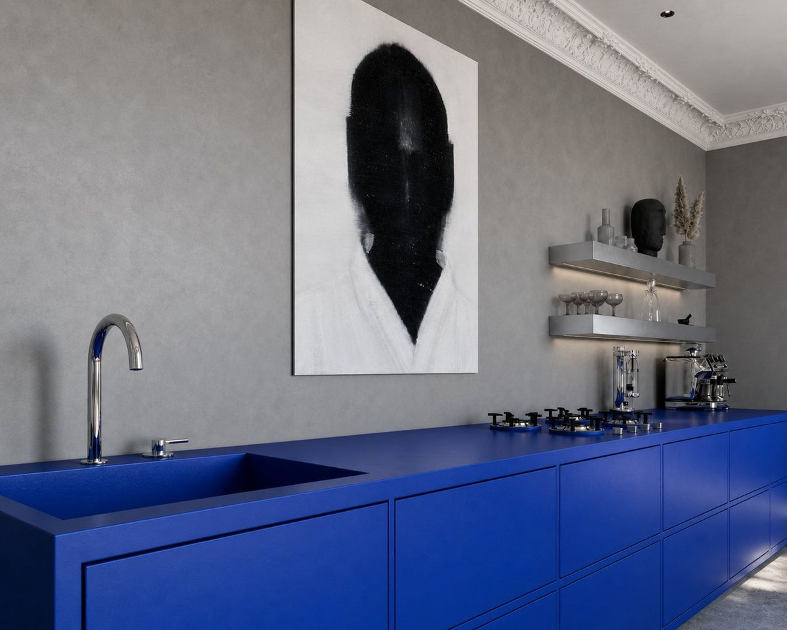
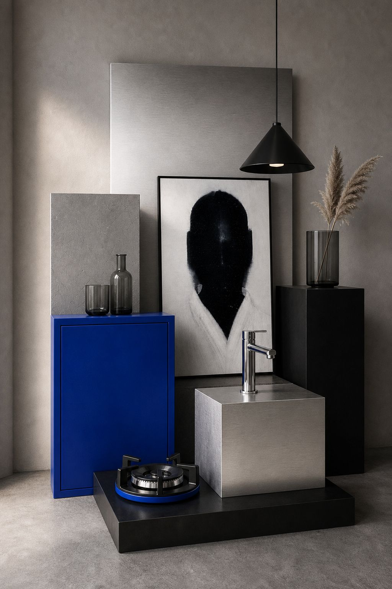

Three eras meet within twenty centimetres: the plaster cornice, a plane of brushed steel and a band of ultramarine lacquer. Colour is not an accessory here. It is structure: remove it and the room loses its centre, not its finish.
Gallery





Contact
I answer every message personally. The more you write about the space, where it is and how it should work, the more concrete my answer will be.
studio@stankiewicz.design